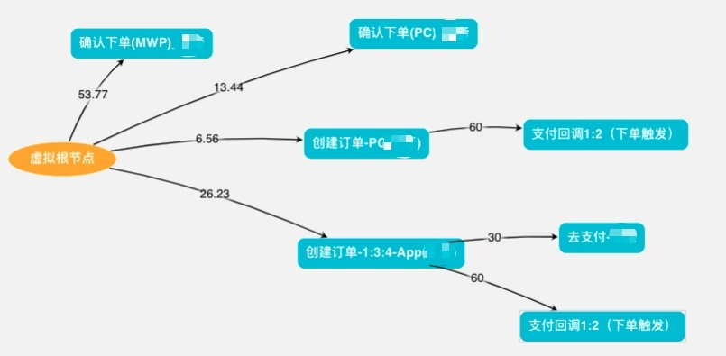
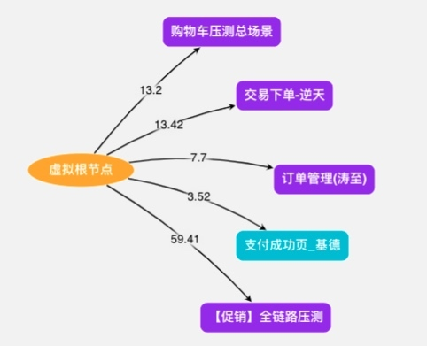
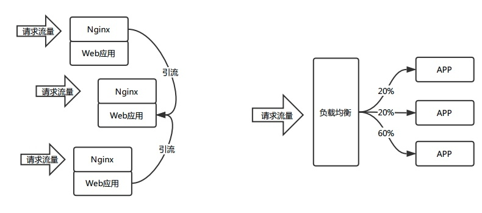
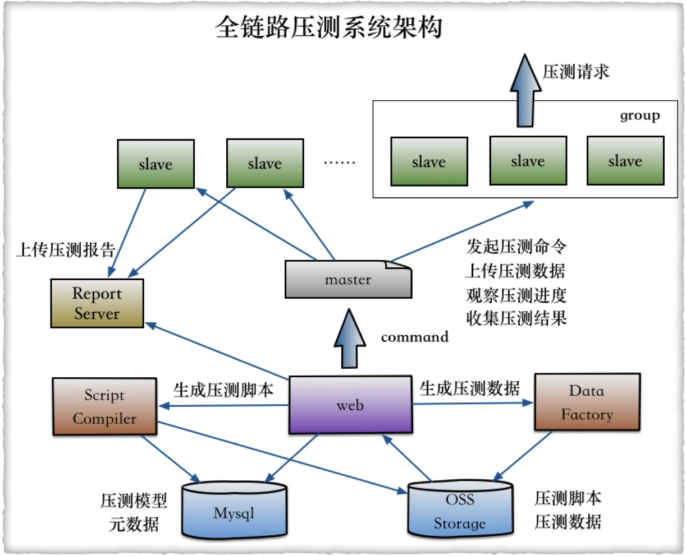
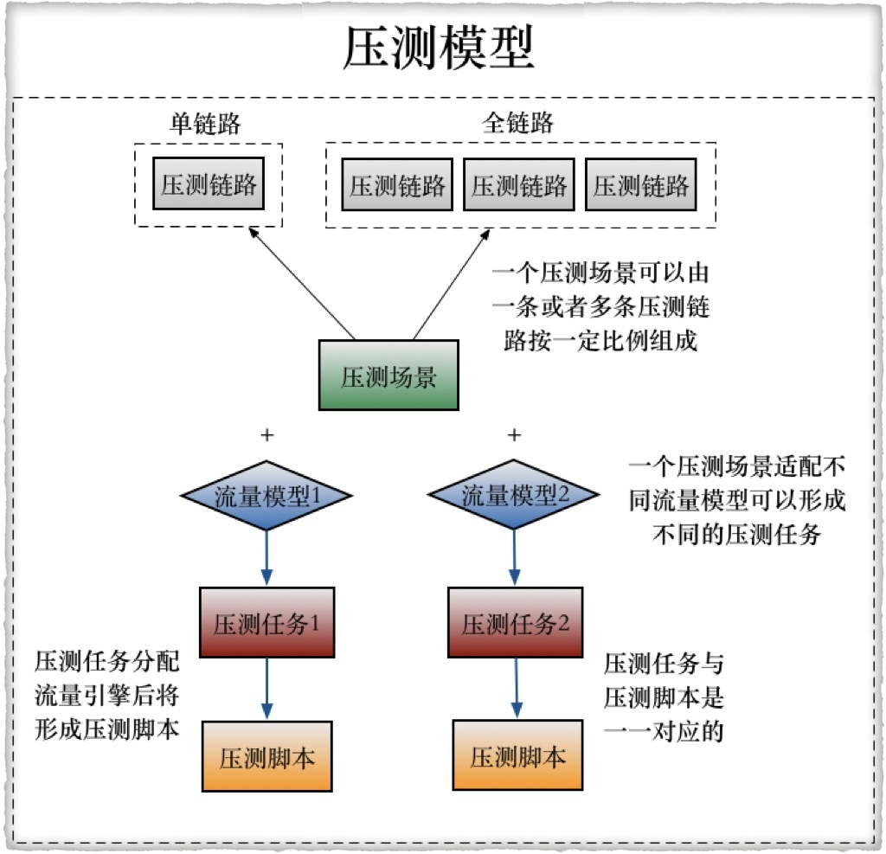

- 00 开篇词 带给你不一样的运维思考.md
- 01 为什么Netflix没有运维岗位？.md
- 02 微服务架构时代，运维体系建设为什么要以应用为核心？.md
- 03 标准化体系建设（上）：如何建立应用标准化体系和模型？.md
- 04 标准化体系建设（下）：如何建立基础架构标准化及服务化体系？.md
- 05 如何从生命周期的视角看待应用运维体系建设？.md
- 06 聊聊CMDB的前世今生.md
- 07 有了CMDB，为什么还需要应用配置管理？.md
- 08 如何在CMDB中落地应用的概念？.md
- 09 如何打造运维组织架构？.md
- 10 谷歌SRE运维模式解读.md
- 11 从谷歌CRE谈起，运维如何培养服务意识？.md
- 12 持续交付知易行难，想做成这事你要理解这几个关键点.md
- 13 持续交付的第一关键点：配置管理.md
- 14 如何做好持续交付中的多环境配置管理？.md
- 15 开发和测试争抢环境？是时候进行多环境建设了.md
- 16 线上环境建设，要扛得住真刀真枪的考验.md
- 17 人多力量大vs.两个披萨原则，聊聊持续交付中的流水线模式.md
- 18 持续交付流水线软件构建难吗？有哪些关键问题？.md
- 19 持续交付中流水线构建完成后就大功告成了吗？别忘了质量保障.md
- 20 做持续交付概念重要还是场景重要？看笨办法如何找到最佳方案.md
- 21 极端业务场景下，我们应该如何做好稳定性保障？.md
- 22 稳定性实践：容量规划之业务场景分析.md
- 23 稳定性实践：容量规划之压测系统建设.md
- 24 稳定性实践：限流降级.md
- 25 稳定性实践：开关和预案.md
- 26 稳定性实践：全链路跟踪系统，技术运营能力的体现.md
- 27 故障管理：谈谈我对故障的理解.md
- 28 故障管理：故障定级和定责.md
- 29 故障管理：鼓励做事，而不是处罚错误.md
- 30 故障管理：故障应急和故障复盘.md
- 31 唇亡齿寒，运维与安全.md
- 32 为什么蘑菇街会选择上云？是被动选择还是主动出击？.md
- 33 为什么混合云是未来云计算的主流形态？.md
- 35 以绝对优势立足：从CDN和云存储来聊聊云生态的崛起.md
- 36 量体裁衣方得最优解：聊聊页面静态化架构和二级CDN建设.md
- 37 云计算时代，我们所说的弹性伸缩，弹的到底是什么？.md
- 38 我是如何走上运维岗位的？.md
- 39 云计算和AI时代，运维应该如何做好转型？.md
- 40 运维需要懂产品和运营吗？.md
- 41 冷静下来想想，员工离职这事真能防得住吗？.md
- 42 树立个人品牌意识：从背景调查谈谈职业口碑的重要性.md
- 划重点：赵成的运维体系管理课精华（一）.md
- 划重点：赵成的运维体系管理课精华（三）.md
- 划重点：赵成的运维体系管理课精华（二）.md
- 新书 《进化：运维技术变革与实践探索》.md
- 特别放送 我的2019：收获，静静等待.md
- 结束语 学习的过程，多些耐心和脚踏实地.md
23 稳定性实践：容量规划之压测系统建设
容量规划离不开对业务场景的分析，分析出场景后，就要对这些场景进行模拟，也就是容量的压力测试，用来真实地验证系统容量和性能是否可以满足极端业务场景下的要求。同时，在这个过程中还要对容量不断进行扩缩容调整，以及系统的性能优化。
今天，我们就来看压力测试的技术实现方式：压力测试系统的建设。我们详细讲讲压力测试的几个维度。
第一个维度，压测粒度
压测粒度上，我们一般会遵照从小到大的规律来做。
1.单机单应用压力测试
优先摸清单个应用的访问模型是怎样的，再根据模型进行单机单应用压力测试。这时我们就可以拿到单个应用和单个应用集群的容量水位，这个值就是后续我们根据业务模型分析之后扩容的基础。
2.单链路压力测试
获取到单个应用集群的容量水位之后，就要开始对某些核心链路进行单独的压力测试，比如商品详情浏览链路、加购物车链路、订购下单链路等等。如下图的交易下单链路压测模型示例，连线上的数字是不同应用或接口调用的流量占比。

3.多链路/全链路压力测试
当单链路的压测都达标之后，我们就会组织多链路，或者全链路压测。多链路本质上就是多个单链路的组合，全链路就是多链路的组合。如下图就是多个交易场景的多链路组合。

第二个维度，压测接口及流量构造方式
接口一般分为HTTP接口和RPC接口，这一点应该不难理解，就不做过多讲解了。
流量构造方式上，根据压测粒度的不同，会采用不同的方式，我们常见的有以下几种方案。
1.线上流量回放
这种方式直接利用了线上流量模型，比较接近真实业务场景，常见的技术手段如TCPCopy，或者Tcpdump抓包保存线上请求流量。但是这种方式也存在一些代价，比如需要镜像请求流量，当线上流量非常大的时候就很难全部镜像下来，而且还需要大量额外的机器来保存流量镜像。到了回放阶段，还需要一些自动化的工具来支持，还要解决各种session问题，真正实施的时候，还是会有不少的工作量。
2.线上流量引流
既然线上回放比较麻烦，那为什么不直接使用线上流量进行压测呢？这个思路确实是可行的，我们前面讲过，压测的主要是HTTP和RPC两种类型的接口，为了保证单个应用的流量压力足够大，这里可以采取两种模式。
一个是将应用集群中的流量逐步引流到一台主机上，直到达到其容量阈值；另一个方案是，可以通过修改负载均衡中某台主机的权重，将更多的流量直接打到某台主机上，直到达到其容量阈值。
这个过程中，我们可以设定单台主机的CPU、Load或者QPS、RT等阈值指标，当指标超出正常阈值后就自动终止压测，这样就可以获取到初步的容量值。
这种方式的好处是，不需要额外的流量模拟，直接使用最真实的线上流量，操作方便，且更加真实。下图是两种引流的方案示例。

3.流量模拟
上述两种流量模拟方式，更适合日常单机单应用的容量压测和规划，但是对于大促这种极端业务场景，真实流量就很难模拟了，因为这种场景只有特定时刻才会有，我们在日常是无法通过线上流量构造出来的。
所以这里就需要利用数据工厂，最终通过流量平台来形成压测流量。这里的工具用到了Gatling，是一款开源的压测工具，用Scala开发的，后来我们针对自己的需求，比如自动生成压测脚本等，做了一些二次开发。

如果会有多种流量模型的话，就要生成多个流量模型，具体可见下图：

第三个维度，施压方式
上面介绍了容量压测的构造过程，那接下来我们要做的就是对真实的线上系统施加压力流量了。很自然的，这里就需要有施加压力的机器，在上面“全链路压测系统”那张图中，你可以看到，我们的施压方式是通过上百台的机器根据压测脚本和压测数据对系统施压的，我来简单介绍一下大致过程。
- 通过实现在Web控制台配置好的压测场景，自动生成压测脚本。
- 利用数据工厂构造出压测数据，这个就是业务场景的模拟，像阿里做得比较完善，就可以借助AI和BI的技术手段生成很多压测模型，且基本都接近于现实情况下的业务场景。
- 通过Web控制台，根据压测脚本和压测数据，生成压测任务，推送到压测集群的Master节点，再通过Master节点推动到上百台的Slave节点，然后就开始向线上系统施加模拟的流量压力了。
关于施压机的分布，大部分仍然是跟线上系统在同机房内，少量会在公有云节点上。但是对于阿里，因为其自身的CDN节点遍布全球，所以他就可以将全球（主要是国内）的CDN节点作为施压机，更加真实地模拟真实用户从全球节点进入的真实访问流量。这种方式对于蘑菇街就显得成本过高，技术条件和细节也还达不到这个程度。
当前阿里已经将这种压测能力输出到了阿里云之上，可以说是对其云生态能力的有力补充，同时也为中小企业在容量规划和性能压测方面提供了很好的支持。
第四个维度，数据读写
压测过程中，对于读的流量更好构造，因为读请求本身不会对线上数据造成任何变更，但是对于写流量就完全不一样了，如果处理不好，会对线上数据造成污染，对商家和用户造成资损。
所以，对于写流量就要特殊处理，这块也有比较通用的解决方案，就是对压测的写请求做专门的标记。当请求要写数据库时，由分布式数据库的中间件框架中的逻辑来判断这个请求是否是压测请求，如果是压测写请求则路由到对应的影子库中，而不是直接写到线上正式的库中。
在这之前，要提前创建好对应的影子库。假设建立影子库的原则是原schema + mirro，如果正式库是order，则影子库为order_mirror，这时两个库中的数据量必须是一致的。对于非敏感信息，数据内容也可以保持一致，这样可以在最大程度上保证数据模型一致。
这里再呼应一下我们最开始提到的基础服务标准化工作，如果这个工作在前面做得扎实，它的优势在这里就体现出来了。我们刚刚提到的影子库的路由策略是基于中间件框架来实现的，如果使用的框架不一样，不是标准的，这个功能可能就很难应用起来。这一点在后面全链路以及开关等稳定性方案中，还会涉及到。
今天我们介绍了容量压测的技术方案，比较复杂，而且需要对相应场景进行针对性的建设。关于细节部分，你还有什么问题，欢迎留言与我讨论。
如果今天的内容对你有帮助，也欢迎你分享给身边的朋友，我们下期见！
© 2019 - 2023 Liangliang Lee. Powered by gin and hexo-theme-book.